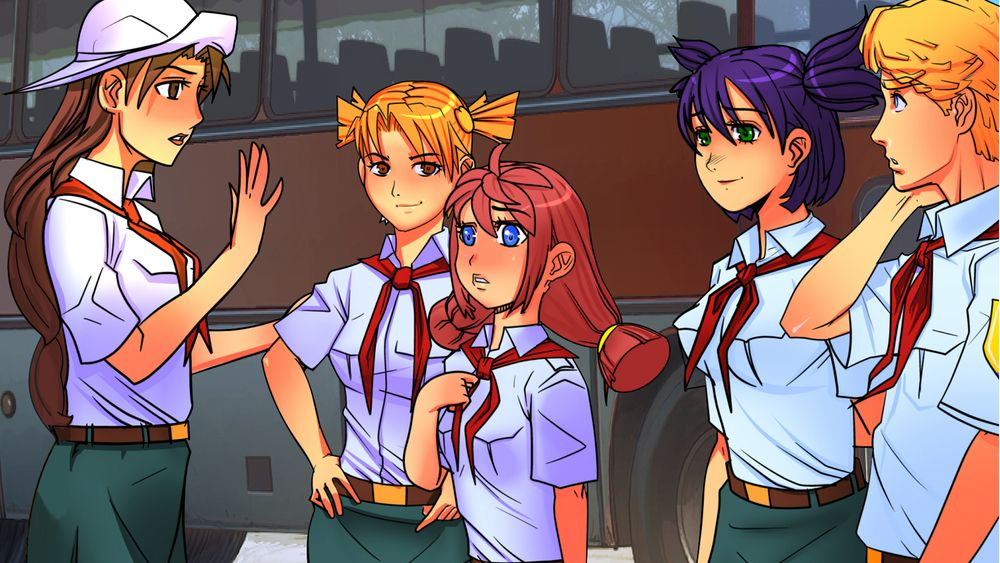

7 дней лета, билд 0.24c (Славя ревамп)
Страница 1 из 1 • Поделиться •

7 дней лета, билд 0.24c (Славя ревамп)
автор 7dl-kun в Сб 31 Окт 2015 - 3:42

Перепил классической части и косметические изменения в д.7 Слави-классик.
Издание исправленное и дополненное. И нет, я ничего ещё не сделал с камею и иже с ними.
Потому что я лентяй.
Брать туть: https://yadi.sk/d/tmo0Tk92kEWLM
Хотфикс: rghost.ru/7FXtYwdcF
Последний раз редактировалось: 7dl-kun (Чт 5 Ноя 2015 - 2:39), всего редактировалось 4 раз(а)

7dl-kun- Находка для шпиона

- Сообщения : 3026
Дата регистрации : 2014-09-07
Откуда : здесь столько наркоманов?
Re: 7 дней лета, билд 0.24c (Славя ревамп)
автор Moonshine в Сб 31 Окт 2015 - 12:45
Охохо.
Фид по первым трем дням и вычитку чуть позже постараюсь запостить, если не опередят.
Сейчас немного не в состоянии, после прочтения концовки.
А за "Все же хорошо?" огромное Вам человеческое спасибо и низкий поклон. Блестяще.
В общем, занудный и привередливый славяфаг выпросил себе концовку. Которая получилась даже лучше, чем можно было представить. И сидит теперь довольный, гад такой.
Но это действительно все, о чем я мог бы мечтать в завершении этого прекрасного рута.
Еще раз спасибо Вам за то, что дарите такие эмоции.
Фид по первым трем дням и вычитку чуть позже постараюсь запостить, если не опередят.
Сейчас немного не в состоянии, после прочтения концовки.
А за "Все же хорошо?" огромное Вам человеческое спасибо и низкий поклон. Блестяще.
- Спойлер:
Это было прекрасно. Отличная идея - добавить в концовку волю "оригинальной" Слави, не отрывая этот момент еще несколькими днями повествования. Только усилило мощь этой концовки. Стихотворение тоже подобрано весьма метко и очень гармонично вписалось.
Семен в себе разобрался окночательно, все разложил по полочкам, взглянув на общую картину, не оставив хвостов. Пусть и станет это лишь отзвуком в конце. Прощанием "оригинальной", которой хотелось, чтобы Семен "отпустил". И жил.
Печально. Красиво.
И "оригинальная" получила свой трибьют и не осталась лишь плот девайсом, который просто исчез, выполнив свою задачу.
И выстрадавшая свое счастье "копия" действительно его получает.
Вместе с поцелуем в макушку и осознающим ценность этого человеком. И отката не происходит, так что пройденный ими путь не забыт. И выстроенные по ходу этих событий отношения тоже не обнуляются. Оба через что-то прошли, поддерживали друг друга, закалились. И это с ними на всю жизнь останется.
"Пятьдесят первых поцелуев", конечно, тоже здорово, но все-таки это немного другое, на мой взгляд.
Визит в медпункт прекрасная сцена. Шиза во всей красе, весьма эффективно действует. Самому захотелось её как-нибудь прикончить в тот момент. Но она, безусловно, права.
И пусть получилось, что "оригинальная" Славя и Шиза все сделали за Семена, его метания в этой концовке мне понятны. И некий толчок действительно был не лишним. Ведь действовать надо было незамедлительно. А руку помощи в этой концовке Семен, на мой взгляд, заслужил.
Пробивная вышла концовка. Впору ждать счета за ремонт от соседей.
В общем, занудный и привередливый славяфаг выпросил себе концовку. Которая получилась даже лучше, чем можно было представить. И сидит теперь довольный, гад такой.
Но это действительно все, о чем я мог бы мечтать в завершении этого прекрасного рута.
Еще раз спасибо Вам за то, что дарите такие эмоции.

Moonshine- Маргинал

- Сообщения : 341
Дата регистрации : 2015-05-05
Re: 7 дней лета, билд 0.24c (Славя ревамп)
автор LRS в Сб 31 Окт 2015 - 21:35
Вылет на 6 дне.
I'm sorry, but an uncaught exception occurred.
While running game code:
File "game/scenario_alt/Scenario/Done/alt_route_sl_cl.rpy", line 12490, in script
File "game/scenario_alt/Scenario/Done/alt_route_sl_cl.rpy", line 12490, in python
NameError: name 'zenteleft' is not defined
-- Full Traceback ------------------------------------------------------------
Full traceback:
File "D:\Alcohol 120%\VN\Бесконечное лето\everlasting_summer-1.1\renpy\bootstrap.py", line 265, in bootstrap
renpy.main.main()
File "D:\Alcohol 120%\VN\Бесконечное лето\everlasting_summer-1.1\renpy\main.py", line 327, in main
run(restart)
File "D:\Alcohol 120%\VN\Бесконечное лето\everlasting_summer-1.1\renpy\main.py", line 78, in run
renpy.execution.run_context(True)
File "D:\Alcohol 120%\VN\Бесконечное лето\everlasting_summer-1.1\renpy\execution.py", line 509, in run_context
context.run()
File "D:\Alcohol 120%\VN\Бесконечное лето\everlasting_summer-1.1\renpy\execution.py", line 288, in run
node.execute()
File "D:\Alcohol 120%\VN\Бесконечное лето\everlasting_summer-1.1\renpy\ast.py", line 1009, in execute
show_imspec(self.imspec, atl=getattr(self, "atl", None))
File "D:\Alcohol 120%\VN\Бесконечное лето\everlasting_summer-1.1\renpy\ast.py", line 930, in show_imspec
at_list = [ renpy.python.py_eval(i) for i in at_list ]
File "D:\Alcohol 120%\VN\Бесконечное лето\everlasting_summer-1.1\renpy\python.py", line 1338, in py_eval
return eval(py_compile(source, 'eval'), globals, locals)
File "game/scenario_alt/Scenario/Done/alt_route_sl_cl.rpy", line 12490, in <module>
scene bg ext_path_day at zenteleft
NameError: name 'zenteleft' is not defined
Windows-post2008Server-6.2.9200
Ren'Py 6.16.3.502
Everlasting Summer 1.0
I'm sorry, but an uncaught exception occurred.
While running game code:
File "game/scenario_alt/Scenario/Done/alt_route_sl_cl.rpy", line 12490, in script
File "game/scenario_alt/Scenario/Done/alt_route_sl_cl.rpy", line 12490, in python
NameError: name 'zenteleft' is not defined
-- Full Traceback ------------------------------------------------------------
Full traceback:
File "D:\Alcohol 120%\VN\Бесконечное лето\everlasting_summer-1.1\renpy\bootstrap.py", line 265, in bootstrap
renpy.main.main()
File "D:\Alcohol 120%\VN\Бесконечное лето\everlasting_summer-1.1\renpy\main.py", line 327, in main
run(restart)
File "D:\Alcohol 120%\VN\Бесконечное лето\everlasting_summer-1.1\renpy\main.py", line 78, in run
renpy.execution.run_context(True)
File "D:\Alcohol 120%\VN\Бесконечное лето\everlasting_summer-1.1\renpy\execution.py", line 509, in run_context
context.run()
File "D:\Alcohol 120%\VN\Бесконечное лето\everlasting_summer-1.1\renpy\execution.py", line 288, in run
node.execute()
File "D:\Alcohol 120%\VN\Бесконечное лето\everlasting_summer-1.1\renpy\ast.py", line 1009, in execute
show_imspec(self.imspec, atl=getattr(self, "atl", None))
File "D:\Alcohol 120%\VN\Бесконечное лето\everlasting_summer-1.1\renpy\ast.py", line 930, in show_imspec
at_list = [ renpy.python.py_eval(i) for i in at_list ]
File "D:\Alcohol 120%\VN\Бесконечное лето\everlasting_summer-1.1\renpy\python.py", line 1338, in py_eval
return eval(py_compile(source, 'eval'), globals, locals)
File "game/scenario_alt/Scenario/Done/alt_route_sl_cl.rpy", line 12490, in <module>
scene bg ext_path_day at zenteleft
NameError: name 'zenteleft' is not defined
Windows-post2008Server-6.2.9200
Ren'Py 6.16.3.502
Everlasting Summer 1.0
LRS- Ньюфаг

- Сообщения : 12
Дата регистрации : 2015-05-03
Возраст : 29
Re: 7 дней лета, билд 0.24c (Славя ревамп)
автор Элдхэнн в Пн 2 Ноя 2015 - 0:55
Вечером первого дня у столовой:
"вешать собак на пионерОВ, которЫЙ не захотеЛ связываться".
"вешать собак на пионерОВ, которЫЙ не захотеЛ связываться".

Элдхэнн- Людовед

- Сообщения : 1002
Дата регистрации : 2015-03-30
Возраст : 38
Откуда : Москва
Re: 7 дней лета, билд 0.24c (Славя ревамп)
автор Dantiras в Пн 2 Ноя 2015 - 1:00
Хотфикс, тов. Элдхэнн.Элдхэнн пишет:Вечером первого дня у столовой:
"вешать собак на пионерОВ, которЫЙ не захотеЛ связываться".

Dantiras- Мизантроп

- Сообщения : 615
Дата регистрации : 2015-08-17
Re: 7 дней лета, билд 0.24c (Славя ревамп)
автор Элдхэнн в Пн 2 Ноя 2015 - 1:08
Ну не увидел я хотфикса...
Элдхэнн- Людовед
- Сообщения : 1002
Дата регистрации : 2015-03-30
Возраст : 38
Откуда : Москва
Страница 1 из 1